Le sujet
La CyberSécurité
La CyberSécurité appelé aussi sécurité des systèmes d'information (SSI) est l’ensemble des moyens techniques, organisationnels, juridiques et humains nécessaires et mis en place pour conserver, rétablir, et garantir la sécurité du système d'information. Aujourd’hui, la sécurité est un enjeu majeur pour les entreprises ainsi que pour l’ensemble des acteurs qui l’entourent.
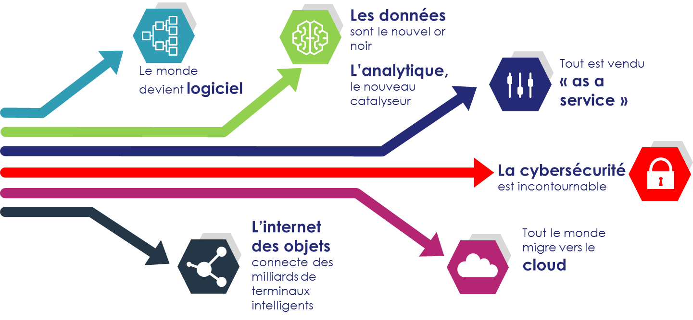Veille technologique
Les domaines d'applications
• Intelligence artificielle
De nouvelles solutions à base d’intelligence artificielle permettent notamment d’assurer une protection plus efficace. Avec une intelligence suffisamment entraînée, un assaillant peut par exemple envoyer des malwares à l’assaut de sites protégés par des Captcha.
Exemple : les assitants vocaux tel qu'Amazon Alexa ou bine google Home.
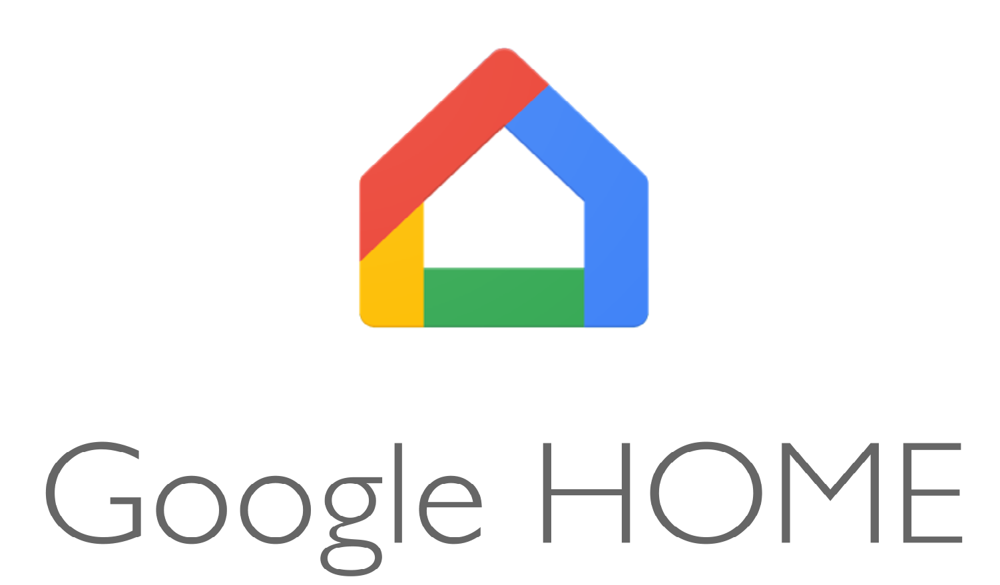• IoT industriel
Les fabricants ont de plus en plus recours à l'Internet des objets (IoT) dans leurs processus de production. Or, cela accroît d'autant le risque de vulnérabilité de leurs systèmes connectés face aux cybercriminels et aux pirates, dont le but est d'arrêter la chaîne de production ou de voler de la propriété intellectuelle.
Exemple : Microsfot x Rolls-Royce, developpement d'un logiciel de maintenance prédictive. es managers du constructeur ont une vue globale de tout ce qui se passe dans les avions utilisant ce nouveau service.
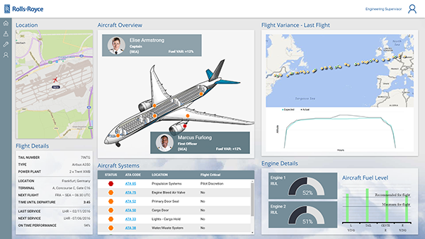• Reconnaissance faciale
La reconnaissance faciale, technologie désormais mature et performante, est un outil de confiance au service des forces de police permettant d’identifier des criminels, ou, pour les services de police aux frontières de vérifier l’identité des voyageurs de manière plus approfondie.
Un logiciel développé par des hackers pour la réalisation de tests, utilise la technologie de la reconnaissance faciale afin de tracker des sujets à travers plusieurs réseaux sociaux tels que Facebook, Twitter, Instagram, LinkedIn et tout autre plateforme sur laquelle les utilisateurs sont enregistrés sous un nom et une photo.
Les organisations répondront en utilisant davantage de systèmes basés sur la biométrie comportementale.
Exemple : L'utilisation de FaceID ou bien Windows Hello
• Logistique
Les attaques par malwares et les menaces persistantes avancées ciblant la chaîne logistique marqueront l’année 2018 et au-delà. L’augmentation des attaques ciblant les terminaux mobiles est une autre tendance forte
Exemple : L'outil developpé par DHL nommé DHL Resilience360
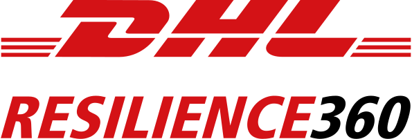Mon domaine d'application
La CyberSécurité des applications mobiles et webs dans l'environement bancaire
Les données personnelles sont depuis toujours un sujet ultra-sensible, en particulier pour les Français. Les banques, qui comptent parmi les acteurs les mieux armés en matière de cybersécurité, doivent poursuivre leurs efforts pour rester à la pointe.
L'architecture du Système d'informations
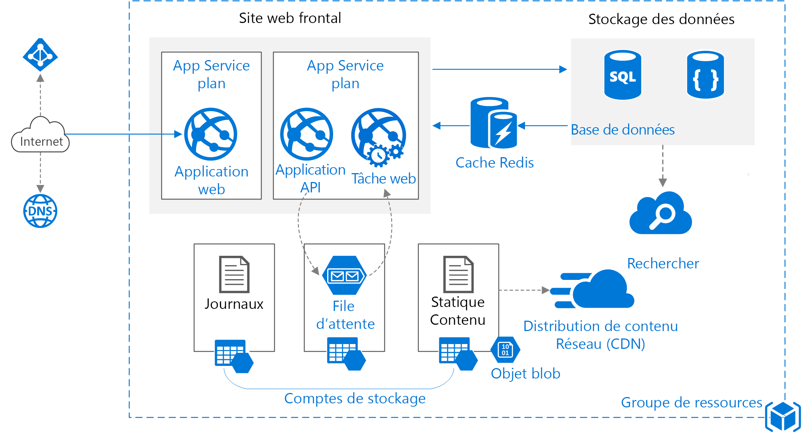
L’architecture d’une application Web est dite « Architecture à 3-tiers »
• Couche présentation •
il s’agit de la partie de l'application responsable de la présentation des données, et de l'interaction avec l'utilisateur (application HTML exploitée par un navigateur Web ou WML pour être utilisée par un téléphone portable par exemple).
• Couche métier •
Elle reçoit les requêtes utilisateur. Le serveur d'application fournit les traitements métiers. C'est là qu'est implémentée la logique du système et ses règles de gestion. Ce niveau protège les données d'un accès direct par les clients
• Couche d'accès aux données •
Couche responsable de la gestion des données. Cette couche permet de rendre l'accès aux données transparente (uniforme) quelle que soit la méthode utilisée pour les stocker (fichier, base de données...).
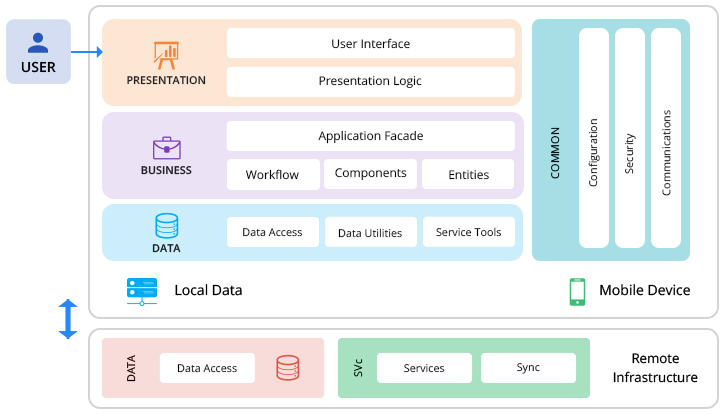
Les enjeux techniques et fonctionnels
Les attaquants peuvent potentiellement utiliser différents chemins à travers l'application pour porter atteinte aux données banquaire ou bien même à l'application. Chacun de ces chemins représente un risque qui peut être suffisamment grave pour récupérer des informations confidentielles.
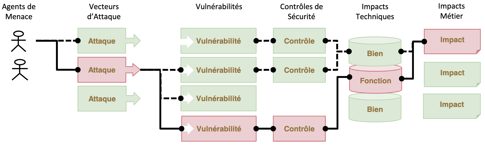
Les cybercriminels visent notamment les employés des banques, comme l’avait illustré l’affaire Carbanak en 2015. Un groupe criminel avait réussi à s’introduire sur les postes de travail d’employés d’une centaine de banques dans plus de 30 pays, y compris la France, par l’intermédiaire d’e-mails personnalisés
Ces e-mails avaient permis aux hackers d’infiltrer le système informatique des établissements bancaires en y installant des backdoors
les perspectives d’évolution
En février 2018, l'Autorité des marchés financiers (AMF) et I'Agence nationale de la sécurité des systèmes d'information (ANSSI) ont annoncé une coopération renforcée dans le domaine de la protection des systèmes d'information.
En mai 2018, la mise en place de la RGPD (règlement européen sur la protection des données personnelles) permet de relever les exigences sécuritaires pour les entreprises.
La vérification en deux étape (2FA)
La vérification en deux étapes est une méthode par laquelle un utilisateur peut accéder à une ressource informatique après avoir présenté deux preuves d'identité distinctes à un mécanisme d'authentification.
Ce système améliore le niveau de sécurité en intégrant le réseau téléphonique.
En 2006, les premières banques ont installé ce principe dans leurs systemes d'informations. Mais les spécialistes en sécurité ont découvert comment cette dernière pouvait être piratée. Les concepteurs de malwares l’ont bien compris et c’est pour cette raison que les développeurs de chevaux de Troie arrivent à déjouer les mots de passes envoyés par SMS avec facilité.
L’authentification forte
Cette methode est une procédure d’identification qui requiert la concaténation de plusieurs facteurs d’authentification.
La directive européenne sur les services de paiement de 2ème (DSP2) version permet de fixer des obligations sur l'authentification forte pour les paiements de plus de 30 euros afin de réduire la fraude dans l'e-commerce.
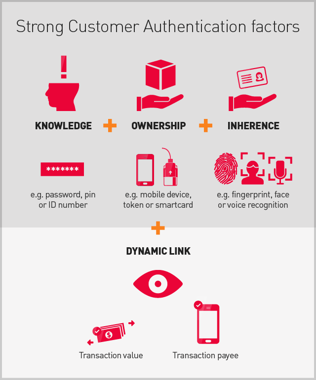La biométrie est une technologie émergente qui propose de nouveaux facteurs d’authentification. En 2013, Apple a mis en place un système de lecture d'empreinte digitale (TouchID) cela a permis le développement de la sécurité des applications mobiles des banques.

En 2017, de la même manière que Touch ID a révolutionné l’authentification à l’aide d’empreintes digitales, Face ID, système de reconnaissance faciale, l’a radicalement changée avec la reconnaissance faciale. Face ID permet une authentification intuitive et sécurisée grâce à un système de caméra doté de technologies avancées permettant de cartographier avec précision la géométrie de votre visage.
L'évolution de la biométrie des smartphones pour les application mobiles a permis une plus faible chance .
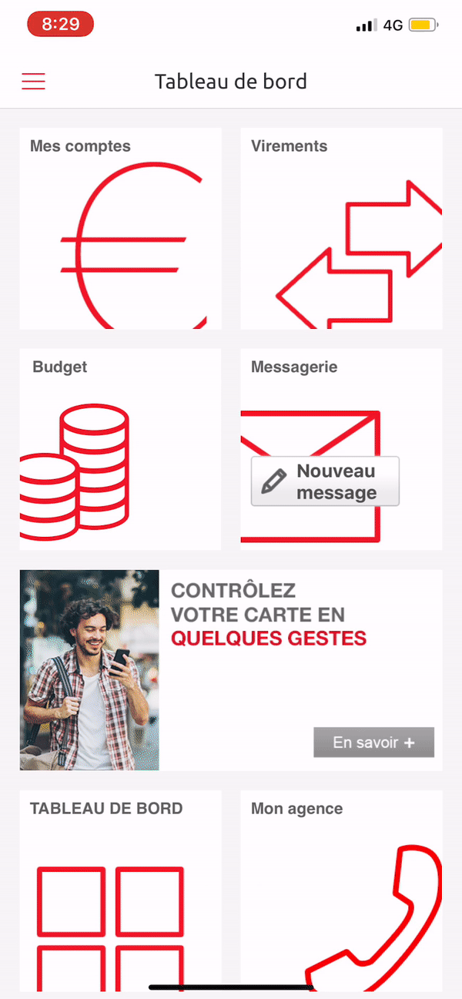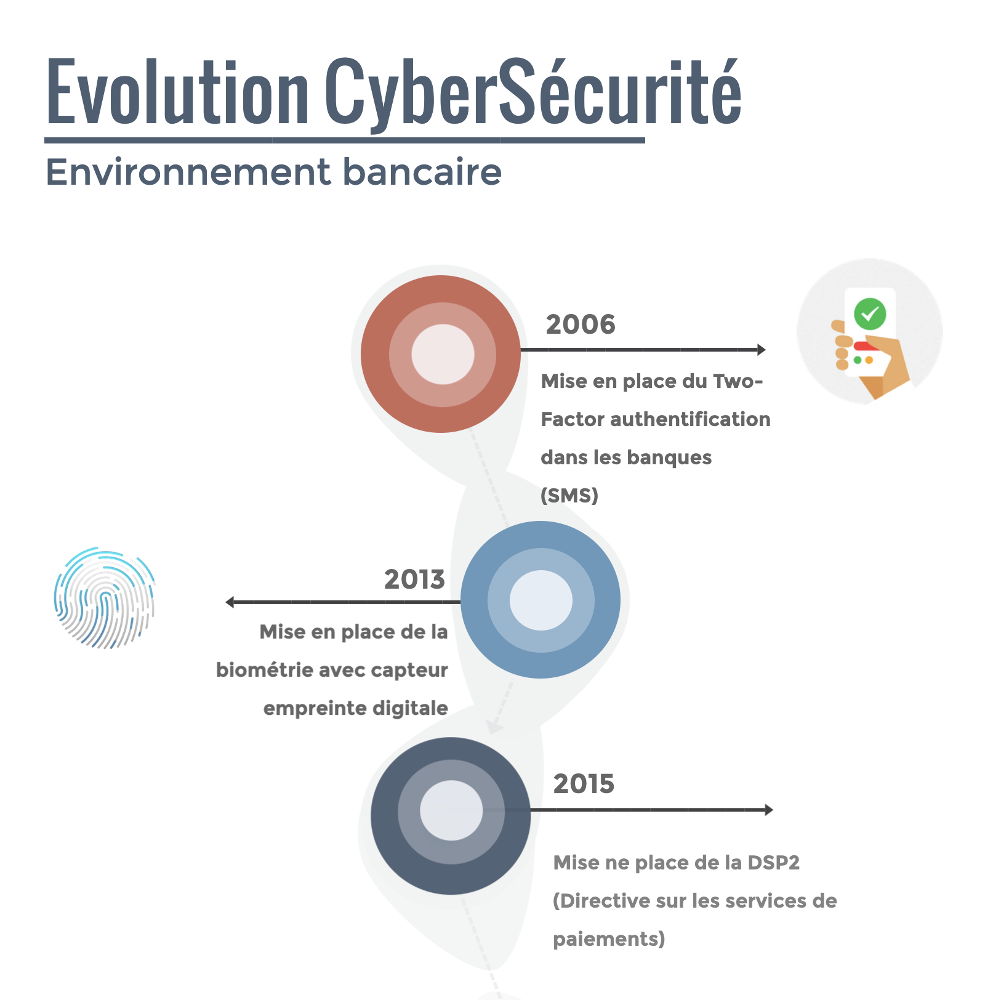 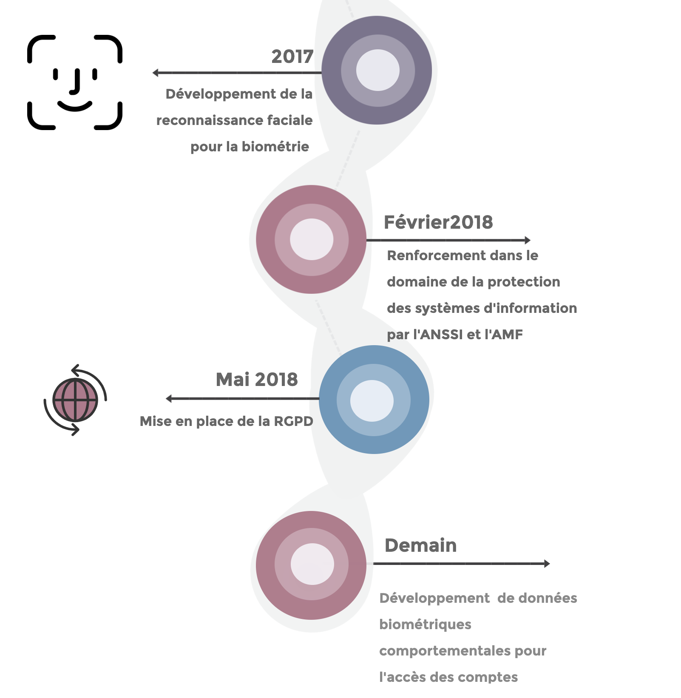
Veille technologique
Outils mis en place.
Tout d'abord, Flipboard est une application de gestion de flux d'informations. Elle permet aux utilisateurs d'en récupérer les informations qu'il veut. Cette application est très utile pour la veille technologique car elle recense plusieurs informations autour d'un sujet mais de différentes sources.
Ensuite, Apple News permet d'effectuer de la prise d'information a travers un environnement totalement personnalisables, en sélectionnant différents magasines sur lesquels vous êtes intéresse. Cette application est donc très utile pour la prise d'information de la veille technologique.
Enfin, Il est possible d'utiliser les flux RSS comme par exemple ou les Google Alertes qui permette d'envoyer les actualités du jours pour des mots clés définis.
Contact
Par courrier
Beynes, 78650
FRANCE
Par E-mail
sebastien.lejeune6@gmail.com
Par téléphone
(+33) 6 61 31 68 24